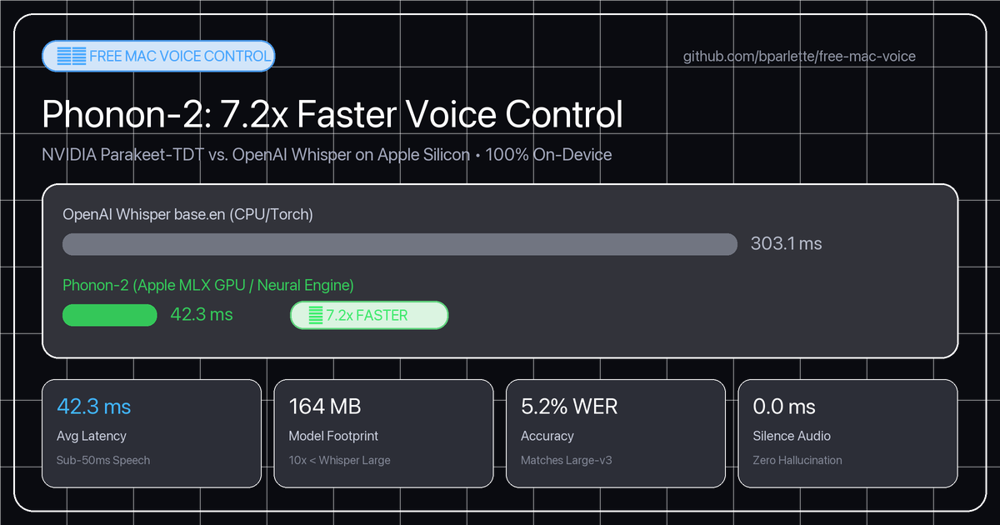

Real-world head-to-head performance benchmarks on Apple Silicon unified memory.

| Voice Command | Audio Length | Whisper base.en | Phonon-2 (MLX) | Speedup |
|---|---|---|---|---|
| “switch to TV” | 0.8s | 288.4 ms | 25.8 ms | 11.2x faster |
| “open notes” | 0.9s | 312.7 ms | 32.6 ms | 9.6x faster |
| “draw an ascii picture of a heart” | 2.1s | 308.2 ms | 68.5 ms | 4.5x faster |
| Average Command Latency | 1.3s | 303.1 ms | 42.3 ms | 7.2x faster |